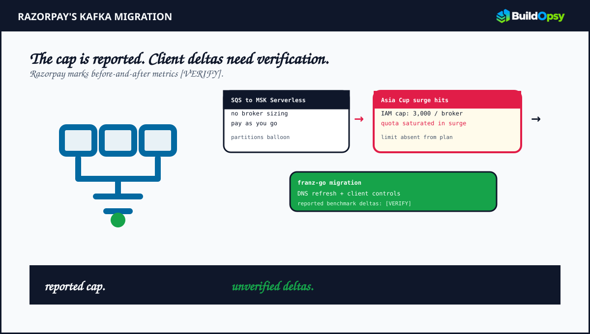
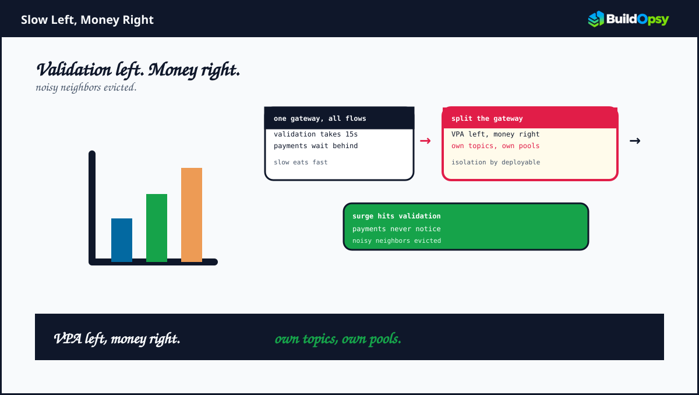

[VERIFY].1. The Switch That Outgrew Every Queue
UPI is asynchronous by nature. Money moves through NPCI in messages, so Razorpay built the Switch around a message bus from day one. Five years later the Switch carries over 70 percent of total UPI volume with a design target of 10,000 transactions per second. Switch v2 split a monolith into event-driven microservices with separate domains for customers, merchants, VPA, payments and mandates. Each domain scales and publishes events independently.
The first bus was AWS SQS Standard. It served well until the team needed true pub-sub semantics and high-throughput, low-latency delivery. The team moved to AWS MSK Serverless for broker autoscaling and pay-as-you-go pricing. Capacity limits and cost still mattered, even without broker sizing.
2. Three Bottlenecks in Five Years
The first bottleneck was partitions. Each partition adds CPU and memory work for metadata, file handles, replica synchronization and leader election. The retrospective says partition counts grew until brokers spent more effort on bookkeeping and scheduling. Adding partitions can increase consumer concurrency, but it also raises per-broker overhead.
The second bottleneck was the MSK Connector. To keep database writes and Kafka publishes atomic, the team wrote events into an outbox table and used a connector to publish them. MSK source connectors publish to one configured topic. Razorpay added custom routing across topics based on row metadata; the connector then crashed frequently. Custom connector code needs its own deploy pipeline, dashboards and on-call ownership.
The third bottleneck appeared ahead of the Asia Cup 2025 surge. Razorpay says its pods scaled out toward a 10,000-TPS design target and hit an MSK IAM limit of roughly 3,000 active TCP connections per broker. The source describes the quota saturating, but marks its before-and-after connection count and publish-latency figures [VERIFY].
Razorpay's account describes replacing GoCloud Pub/Sub with franz-go, a Kafka-native Go client, to restore DNS re-resolution and gain control over connection handling, batching and instrumentation. The post marks the before-and-after connection and publish-latency figures [VERIFY]. Those measurements are not used here to claim a numerical improvement or to isolate the effect of the client change from the other fixes.
The remaining fixes addressed other couplings. Worker pools per consumer decoupled processing concurrency from partition count; sequential fetch, parallel goroutine workers and batch offset commits preserved per-partition ordering. Topic consolidation grouped domain events into shared topics with consumer-side filtering instead of one topic per event type. The gateway split into VPA, Payments and Mandates components isolated slow 15-second validation calls from money movement. Finally, the team moved to provisioned MSK with SASL/SCRAM authentication, which does not impose the same strict connection-count limit as IAM authentication on MSK Serverless.
3. What Went Wrong in the Design
Serverless was adopted without a limits inventory. Autoscaling reduced broker-sizing work, but connection limits, partition behavior and throughput ceilings still applied. The limits differ between Serverless and provisioned clusters, so compare quotas before a migration.
Atomicity rode on a connector. Writing business records and events to one table and relying on a source connector for publishing works until the connector needs custom routing. At that point the custom code needs service ownership, monitoring and a deploy process.
The client abstraction limited Kafka-specific control. Razorpay says GoCloud Pub/Sub made it harder to configure DNS re-resolution, connection handling and batching. Client libraries are load-bearing infrastructure; test their protocol behavior under representative load.
Topics modeled events instead of domains. One topic per event type raised partition counts and broker bookkeeping. Grouping related domain events and filtering by metadata reduced that overhead while preserving routing precision.

4. What Should Happen Instead
First, inventory every managed-service quota before migration: connections per broker, partitions per cluster, throughput per partition and authentication-specific limits. Put each number in a runbook and alert before the limit is reached.
Second, evaluate Kafka-native clients for protocol features such as DNS re-resolution, batching control, compression and connection reuse. Measure those changes under representative load before attributing a latency gain to a library.
Third, decouple concurrency from partitions. Worker pools with batch commits let one partition feed many goroutines while preserving order. Partitions provide durability and ordering; workers provide processing concurrency.
Fourth, isolate latency classes at the infrastructure level. Slow validation calls and fast payment flows should not share partitions, consumers or compute. Razorpay's account describes independent gateway components with separate topics and consumer groups.
Fifth, account for the database-to-Kafka atomicity lost when removing the connector. Separate writes and publishes create failure windows in which one succeeds without the other. Define those windows, measure them and build reconciliation.
5. The Verdict
Razorpay's retrospective documents its migration path, partition and connector issues, an MSK IAM connection cap, and several operational changes. The post marks its before-and-after client connection and publish-latency figures [VERIFY], so this teardown does not present them as measured results. The design lesson is to test client behavior and managed-service quotas together under representative load.
The pattern generalizes. Teams running Kafka on managed infrastructure should know current connections and partitions per broker, and how their surge plan behaves at twice normal traffic. At the other end of the scale spectrum, Roblox's 18-trillion-message platform shows the same protocol at gaming scale.
The cap is reported. The client benchmark deltas still need verification.
Sources and Method
This teardown follows Razorpay Engineering's September 7, 2026 retrospective. The linked post reports the architecture changes and the roughly 3,000 active-connection cap, but leaves its before-and-after client connection and latency figures marked [VERIFY]. This article omits those figures as established measurements.